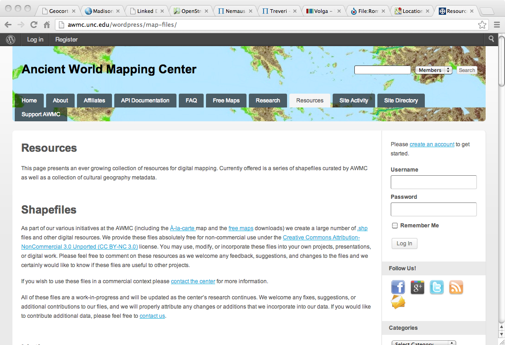
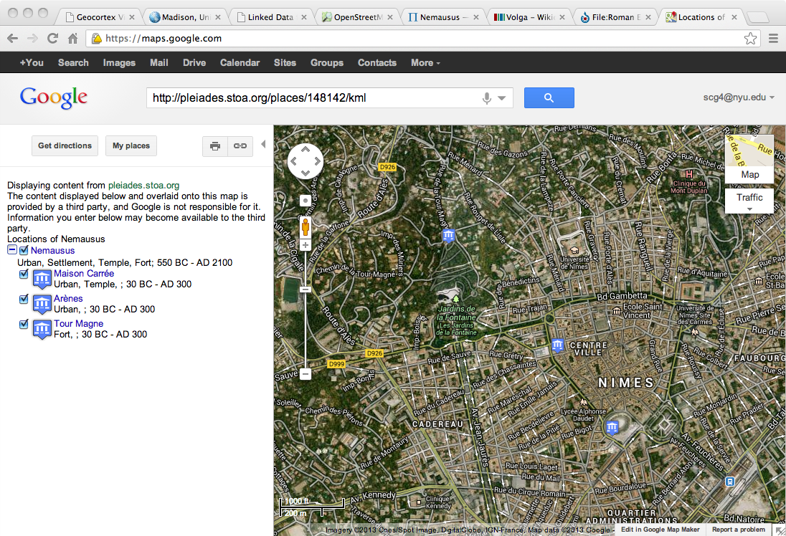
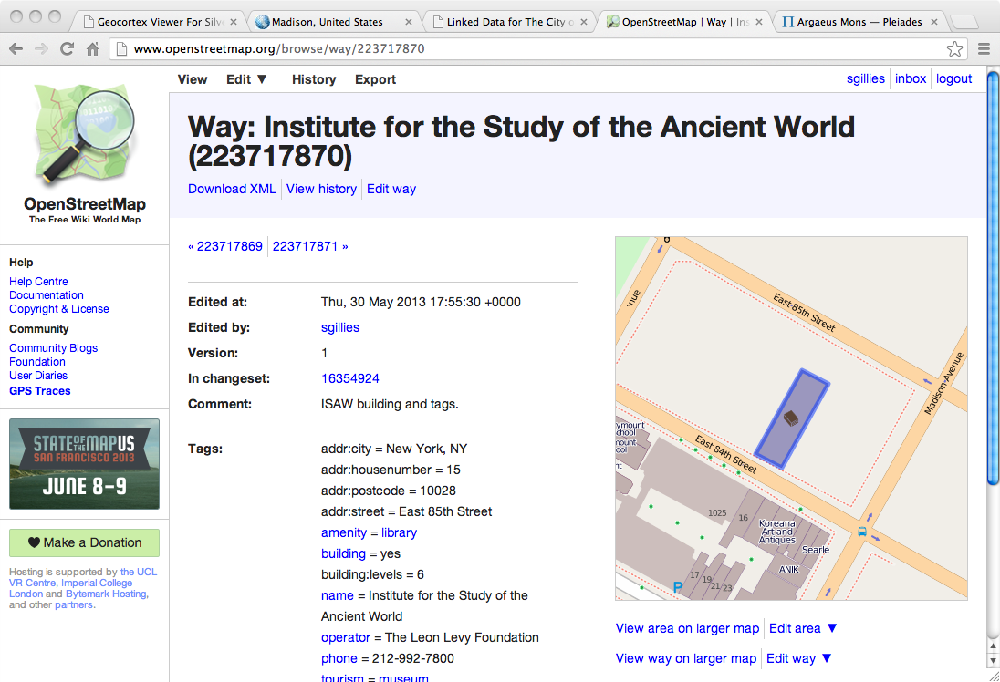

Linked Open Geo Data
A Quick Introduction
Created by Sean Gillies / @sgillies
Institute for the Study of the Ancient World, New York University
5 Stars of Open Geo Data
- Downloadable, openly licensed maps (PDFs, PNGs, &c.)
- Structured feature data (shapefiles, geodatabases)
- Open formats (KML, GeoJSON, RDF)
- Features denoted by URIs, so others can use them in their maps
- Link from features to other things to provide context
★ ★ Structured features

★ ★ ★ ★ URIs, URIs, URIs

★ ★ ★ ★ ★ Even More Links

Features and relationships
- Ordnance Survey Ontology
- GeoVocab Geometry and Spatial Ontologies
- CIDOC-CRM
- Pleiades
GeoVocab
- Inspired by the OS Ontology
- Classes: spatial:Feature, geom:Geometry
- Properties: spatial:C ("connected with"), &c.
- Supports quantitative and qualitative GIS analysis
- geovocab.org
CIDOC-CRM
- E55 Places are geometries (of previous)
- GIS features are subclasses of E18 Physical Thing
- E47 Spatial Coordinates weakly specified
- E55 Place relationships: P121 Overlaps, P122 Borders With
- Many other relationships involving things, events
Pleiades Places
- Equivalent to spatial:Feature and crm:E27_Site
- Precise locations expressed using GeoVocab Geometry Ontology
- Rough locations expressed using OS Spatial Relations
- Networks expressed using GeoVocab Spatial Ontology
5 Stars of Open Geo Data
- Downloadable, openly licensed maps (PDFs, PNGs, &c.)
- Structured feature data (shapefiles, geodatabases)
- Open formats (KML, GeoJSON, RDF)
- Features denoted by URIs, so others can use them in their maps
- Link from features to other things to provide context
{kind=link}